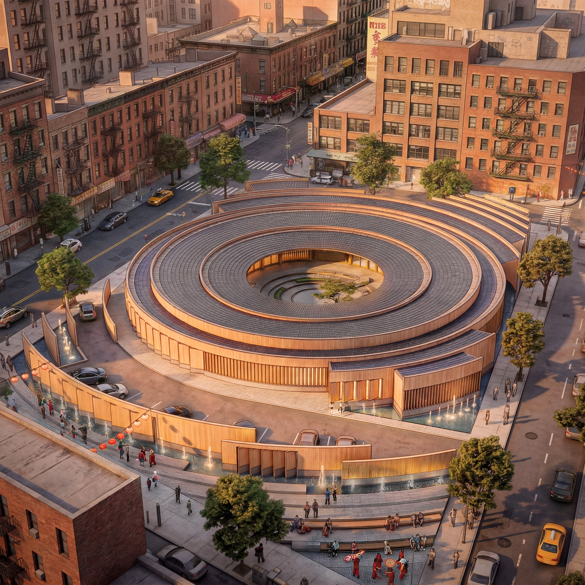
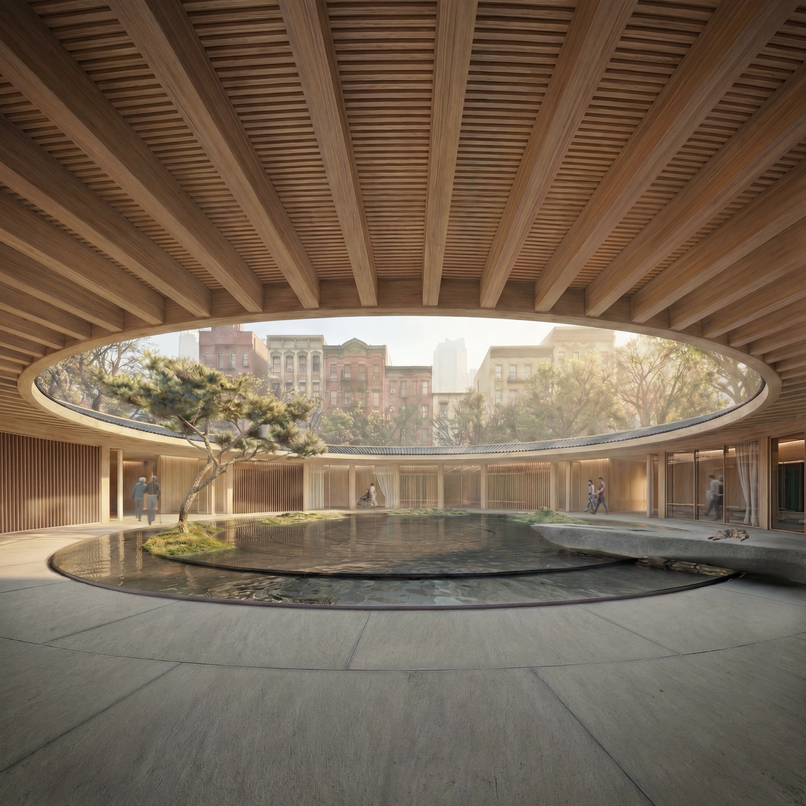
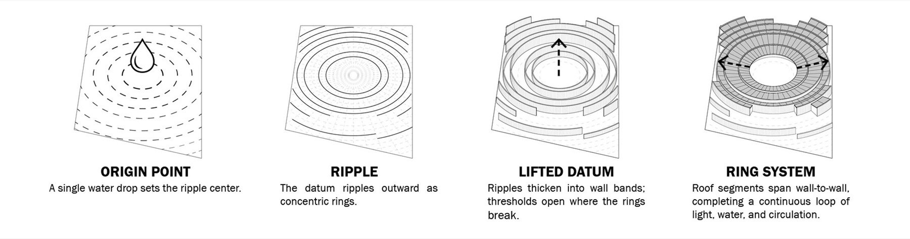
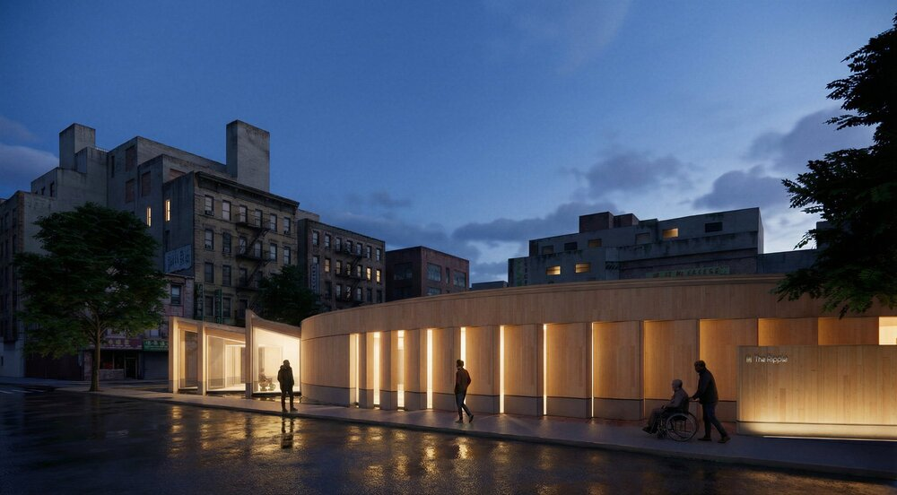
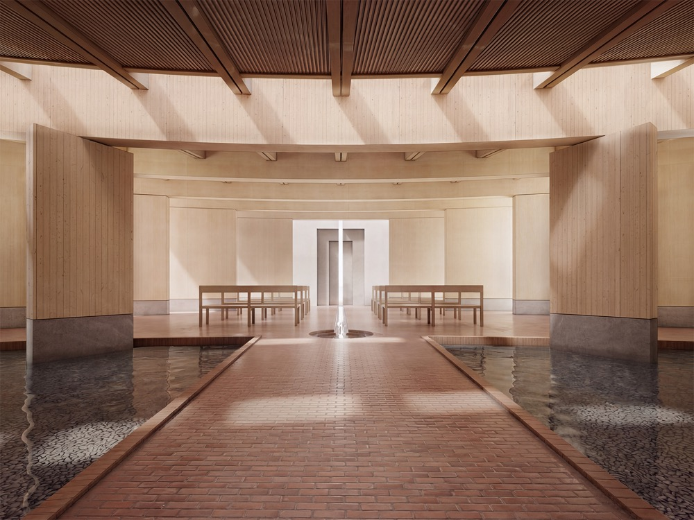
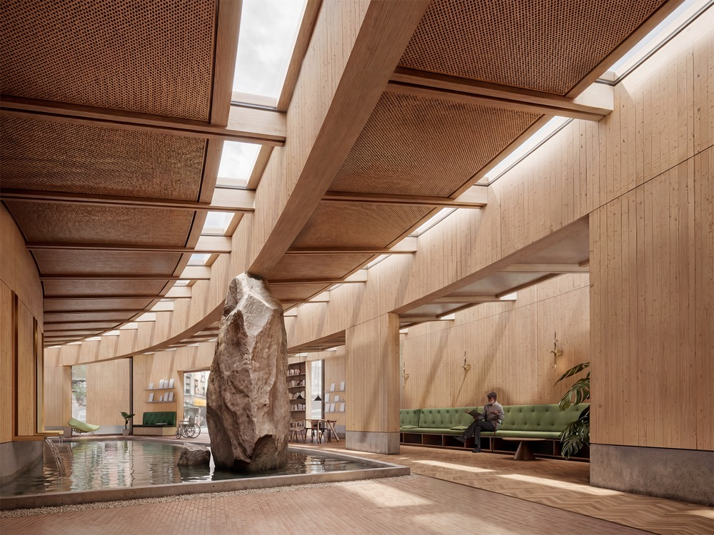
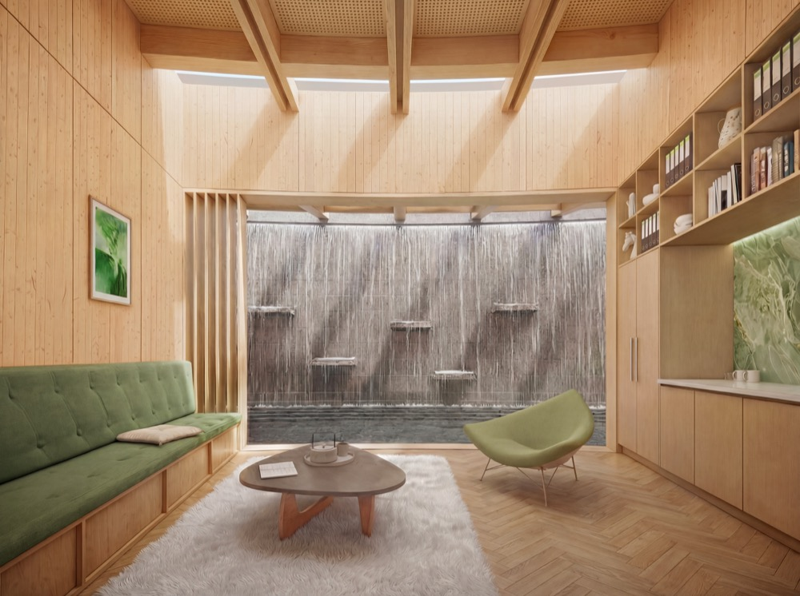
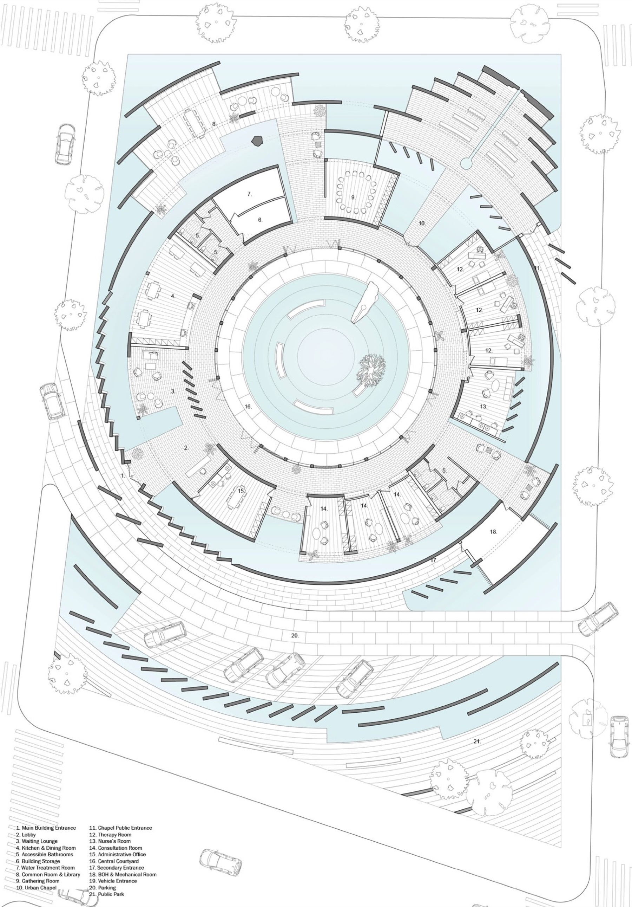
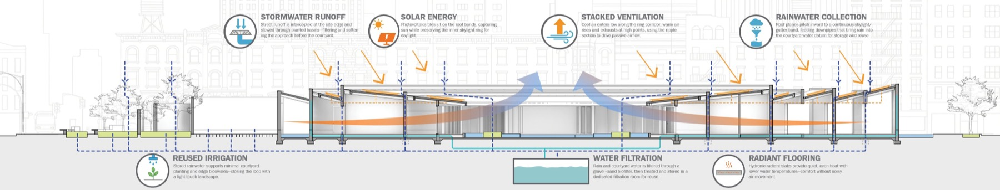
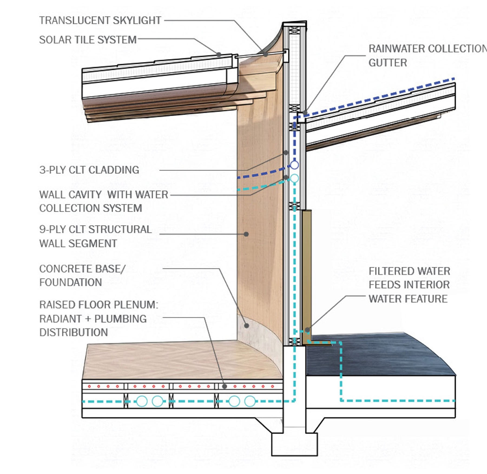

The Ripple
A hospice facility in NYC Chinatown that draws from the traditional Chinese concept of 祖屋 (ancestral house) to create spaces of comfort and dignity.
Program
Hospice
Location
NYC Chinatown
Year
2025
Team
With Hao Zhong, Tom Lin
The Ripple reimagines end-of-life care through the lens of Chinese cultural traditions. Named for the gentle waves that radiate outward from a single point, the project creates spaces that honor both the individual journey and the community bonds that sustain us.


The design draws from the traditional Chinese 祖屋 (ancestral house)—a dwelling type organized around a central courtyard that serves as the heart of family life. Here, this courtyard becomes a healing garden, a place of gathering, reflection, and connection to nature for patients, families, and caregivers alike.

The building's massing ripples outward from the central courtyard, creating a series of intimate spaces at varying scales. Private patient rooms enjoy views of greenery and sky, while shared spaces encourage gentle social interaction without overwhelming those who seek solitude.




Interior spaces are designed with warmth and softness—natural materials, diffused daylight, and carefully considered acoustics create an atmosphere of calm. A chapel, library, and therapy rooms offer different modes of comfort and contemplation.


The building envelope is designed for passive performance, with deep overhangs providing shade and operable windows enabling natural ventilation. Green roofs and rainwater harvesting systems reduce environmental impact while creating additional therapeutic landscapes.
